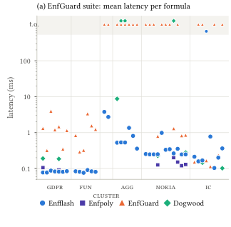

Theorems on the core logic, let-normal form, compilation soundness, and enforcement-loop soundness are formally verified in Lean 4.
Abstract
Runtime enforcers observe a system's behavior and exert control over it to ensure that the system always adheres to its requirements. Many natural requirements not only formulate restrictions on the system's present behavior, but also impose obligations on its future behavior; for instance, agentic security may require personal data collected during a run to be erased by some deadline. In an ever-growing compliance landscape, real-world systems may be subject to hundreds of such requirements. However, existing enforcement mechanisms supporting complex policies are often too slow for production software; instead, developers may resort to non-temporal access control mechanisms and ad-hoc instrumentation, but these scale poorly with requirement complexity. To address this problem, we introduce an efficient algorithm and tool for enforcing complex temporal requirements and demonstrate its performance. Specifically, we identify a fragment of Metric First-Order Temporal Logic (MFOTL) that can be enforced with low runtime complexity while supporting a rich family of practically relevant requirements, including obligations. We then design an enforcement algorithm for this fragment and implement it in EnfFlash, a novel tool that enforces requirements with latency up to 44x lower than EnfGuard, the previous state-of-the-art enforcer, on standard benchmarks, and up to three orders of magnitude lower on security policies for LLM agents. This performance is achieved by compiling requirements into imperative programs that we efficiently interpret. We evaluate EnfFlash both standalone, on existing benchmarks, and integrated in web applications as an enforcement backend. We demonstrate that it can enforce a substantial 400-line MFOTL formula specifying the GDPR on a social network while adding under 15 ms to each page view, which is sufficient for most interactive and real-time applications.
Problem
Runtime enforcers for complex first-order temporal requirements, including obligations about future behavior, are often too slow for production systems. Developers therefore fall back on non-temporal access control or ad-hoc instrumentation.
Approach
The authors identify a fragment of Metric First-Order Temporal Logic (MFOTL) that can be enforced with low runtime complexity and still includes obligations. Formulas in this fragment are compiled, via let-normalization, guard extraction, rewriting and dependency analysis, into EF, an operational enforcement DSL whose per-time-point cost is bounded. EF programs run in a Rust interpreter. The core theorems, including let-normal form and the soundness of compilation and of the enforcement loop, are mechanized in Lean 4.
Results
EnfFlash has up to 44x lower latency than EnfGuard on standard benchmarks and up to three orders of magnitude lower latency on security policies for LLM agents. It enforces a 400-line GDPR MFOTL policy in a web application while adding under 15 ms per page view.

Figure 8. Evaluation results (Tables 2 – 5 ); in (d), prev. is the number of attacks prevented out of 143.
Policy
EnfFlash
EnfPoly
EnfGuard
Dogwood
consent
0.08 (1)
0.11 (1)
1.32 (6)
0.19 (1)
lawfulness
0.08 (1)
0.09 (2)
1.46 (7)
0.19 (2)
gdpr
0.09 (2)
–
3.97 (13)
–
deletion
0.08 (1)
–
0.32 (3)
–
Average latency (max in parentheses) on GDPR benchmark policies (subset)